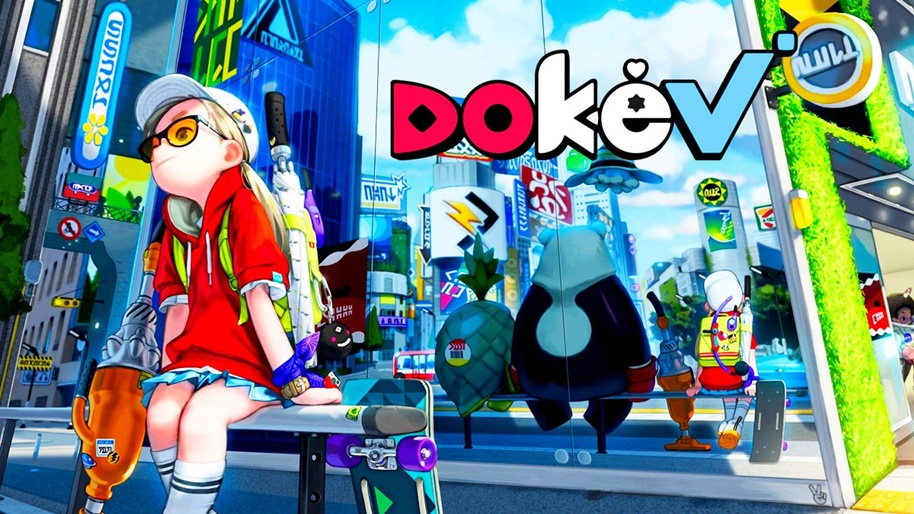
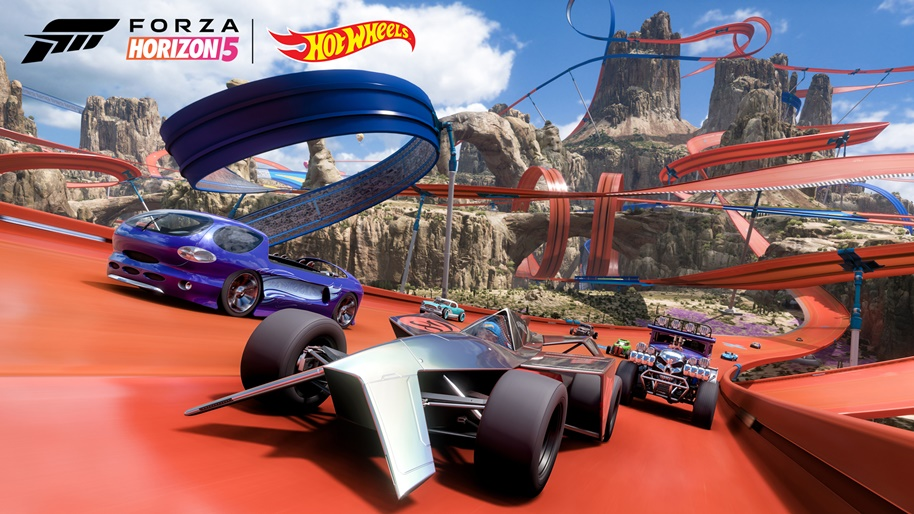

1. Dokev
Parecido com Pokémom um jogo de mundo aberto desenvolvido pela Pearl Abyss onde você poderá colertar criaturas conhecidas como dokebis e entar em grandes aventuras com elas,também poderá batalhar contra elas e outras pessoas.
Previsto para sair ainda esse ano de 2022, ele se encontra disponivel para PlayStation 4, Xbox Series X e Series S, Xbox One, Microsoft Windows, PlayStation 5
Trailer Oficial2. Astro's Playroom

O Astro's Playroom é um jogo de plataforma 3D desenvolvida pela Japan Studio e publicada pela Sony Interactive Entertainment para Playstation 5 e já vem pre instalado.
No geral, foram feitas atualizações para melhorar a estabilidade e performance do jogo, melhorias para garantir uma estabilidade no framerate e correções de bugs, o update chega para oferecer uma melhor experiência aos jogadores que chegam ao mundo do PlayStation 5 e se deparam com o game disponível gratuitamente no console, ou até mesmo para quem já jogou Astro's Playroom e deseja revisitar o game.
O jogo teve a data de lançamento incial em 2020
Trailer Oficial3. Ratchet and Clank: em uma outra dimensão

Ratchet & Clank: Rift Apart "Em outra dimensão" traduzido para o português é um jogo eletrônico de plataforma e tiro em terceira pessoa desenvolvido pela Insomniac Games e publicado pela Sony Interactive Entertainment.foi anunciado há mais ou menos um ano e deixou todos boquiabertos. Na época, ainda não sabíamos muito sobre o poderio da nova geração e como os exclusivos de Playstation 5 seriam.
Com o primeiro trailer do jogo, que mostrava um pouco do gameplay e principalmente a mudança instantânea de cenários possibilitada pelo SSD do Playstation 5, o hype sobre a nova geração foi jogado lá pra cima. Eu mesmo fiquei com muita curiosidade de saber mais sobre o jogo e segurei toda a minha ansiedade até agora, quando tive a oportunidade de jogar Ratchet and Clank: Em Uma Outra Dimensão na íntegra. Já posso adiantar que o jogo me impressionou bastante. Desde os gráficos até o gameplay, tudo foi muito bem polido, e certamente nós temos um exclusivo de impacto no Playstation5.
Trailer Oficial4. Forza Horizon 5
A Microsoft anunciou sua nova expansão Forza Horizon 5: Hot Wheels, confirmando o retorno da parceria que ocorreu em Forza Horizon 3, os jogadores poderão ter acesso a novos carros e pistas exclusivas com a temática de Hot Wheels a partir de 19 de julho, quando será lançada a nova expansão.
Mike Brown, diretor criativo da Playground Games contou durante a apresentação: "Nossos fãs nos contam há anos sobre como eles adoraram a expansão Hot Wheels do Forza Horizon 3, então estavamos esperando o momento certo para trazer a todos outra aventura Hot Wheels. "A expansão Hot Wheels contará com 10 novos veículos exclusivos da expansão e também terá novas pistas explorando quatro novos biomas, entre eles o gelo e a lava. Serão mais de 200 km nos novos circuitos criados para a expansão.
Trailer Oficial5. God of War Ragnarök

God of War Ragnarök é um futuro jogo eletrônico de ação-aventura desenvolvido pela Santa Monica Studio e publicado pela Sony Interactive Entertainment. Está programado para ser lançado em Novembro de 2022 para PlayStation 4 e PlayStation 5. Apesar de novos rumores indicarem o adiamento da antecipada aventura para 2023, o jornalista Jason Schreier, do Bloomberg, afirma ter conversado com três pessoas envolvidas com o projeto, que asseguraram a chegada da nova jornada de Kratos para o fim do ano.
Ainda conforme Schreier, um anúncio sobre a data deve acontecer ainda em junho. As informações foram confirmadas com fontes relacionadas ao projeto que, após o hype de rumores sobre o adiamento do jogo para 2023, toparam falar com o jornalista.“Apesar dos rumores generalizados, God of War Ragnarok da Sony não foi adiado para 2023, de acordo com pessoas familiarizadas com o projeto. O desenvolvimento de videogames é turbulento e o jogo pode muito bem escorregar novamente, mas a partir desta semana, está planejado para novembro”, disse Schreier no Twitter.
Estará disponivel para Xbox Series X e Series S, Xbox One, Microsoft Windows
Trailer Oficial